Robótica II · UNCUYO · Grupo 4
Un robot que no se cae
y anticipa los escalones
Joaquín Calderón · Francisco Castel · Matías Armani · Ignacio Bartolini · Mariano Gimenez
→ o espacio para avanzar · N notas · T reloj · F pantalla completa
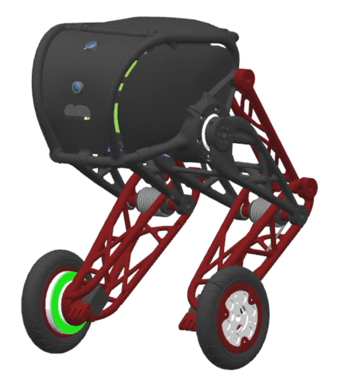
Ruedas o patas: cada una tiene su problema
Ruedas
Rápidas, suaves y muy eficientes en piso plano.
Un escalón o un desnivel las frena en seco.
Patas
Absorben impactos y superan desniveles.
Son lentas y consumen mucha energía al caminar.
Nuestra propuesta: ruedas para desplazarse + patas para amortiguar
Nuestro prototipo: segway_v02
- 2 motores DC con encoder en las ruedas para el equilibrio
- 2 patas de 4 barras con servos de 40 kg·cm (10,7 cm de carrera)
- 1.208 g completo con batería LiPo 3S y placas propias
- 200 Hz frecuencia del lazo de control digital (cada 5 ms)
El péndulo invertido: la regla de los 94 milisegundos
0,00 s
inclinación: 2,0°
Con el control apagado, el polo inestable (λ = +7,35 s⁻¹) duplica el ángulo de caída cada 94 ms.
Un parpadeo humano dura ~300 ms: cuando lo ves inclinarse, ya está en el piso.
Arquitectura del lazo de control a 200 Hz (segway_v02)
IMU MPU-6050 + Encoders
Filtro complementario (τ = 0,5 s) para el ángulo θ y odometría compensada:
x = r · (θ_enc + φ)
Tabla por altura de pata
Combina inclinación φ, giro ω, posición x y velocidad v según el ángulo de las rodillas.
u = kφ·φ + kω·ω + kx·x + kv·v
Doble Notch + Zona Muerta
2 filtros rechaza-banda (7,7 Hz y 11,6 Hz) + compensación de roce seco (deadband = 0,03).
2× MOSFET DRV8871
PWM a 20 kHz en frenado activo (slow decay) + corrección de simetría (trim).
Toda la cadena tarda 2,3 ms dentro de cada ventana exacta de 5,0 ms en el Núcleo 1 del ESP32-S3
El cerebro por dentro: mezclador LQR en tiempo real
Regla de Bryson: diseñamos el costo penalizando igual 8° de inclinación, 10 cm de posición y 12,5 % de motor (R = 64 ⇒ kx = √(100/64) = 1,25).
Respuesta dinámica ante perturbaciones (LQR en vivo)
Arriba: movimiento del robot. Abajo: osciloscopio en vivo con inclinación φ (amarillo), posición x (celeste) y comando de motor u (verde).
Cero de fase no mínima: retroceder para poder avanzar
Para inclinarse hacia adelante y acelerar, las ruedas primero deben patear 14 mm hacia atrás.
Acto III
Diseño Mecánico CAD y Electrónica Propia
Mecanismo de 4 barras (3.ª iteración), chasis con tapa y placas v0.7 / v0.6
Cinemática de la pata: mecanismo plano de 4 barras
Altura de cabina: — · Ganancia kφ: —
Proporción 1,40 : 1,35 : 0,51 : 1,40 a escala 80 (AD = 112, BC = 108, CD = 40,8, DP = 112 mm).
El eje de la rueda P sube y baja 10,7 cm casi en línea recta vertical con un solo servo por pata, mientras el LQR adapta sus ganancias según la postura.
Diseño Mecánico CAD: Cabina portante y Chasis con Tapa
Ensamble General
Cabina central + 2 patas simétricas de 4 barras + ruedas de Ø80 mm con interior de gomaespuma (8.500 N/m).
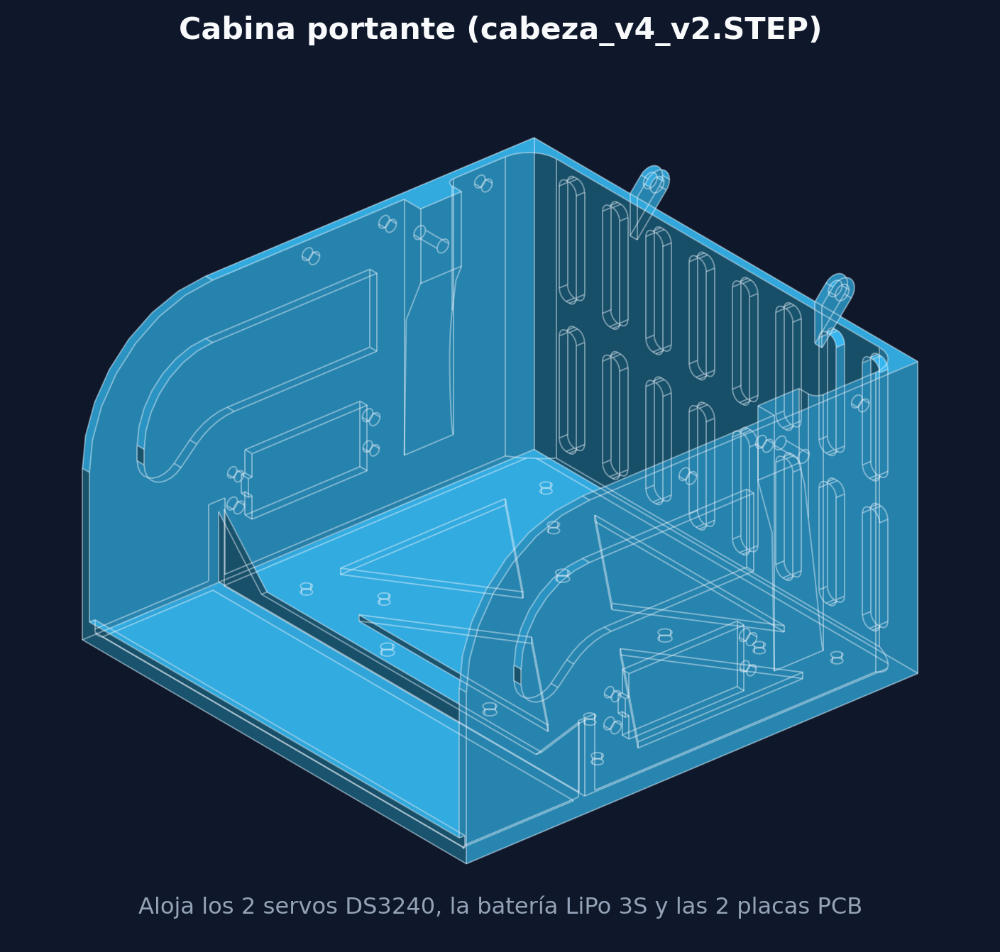
Cabina Portante (cabeza_v4_v2)
Estructura central con bancada AB a 45°, alojamiento para los 2 servos DS3240, batería LiPo y volumen para ambas PCBs.
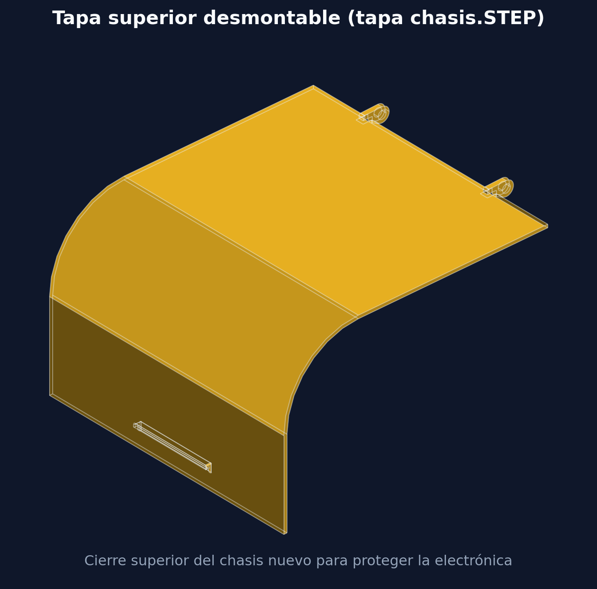
Tapa Desmontable (tapa chasis)
Cierre curvo superior del ensamble chasis con tapa.SLDASM para proteger la Placa de Lógica y la batería ante caídas.
Diseño Mecánico CAD: Eslabones de la 3.ª Iteración (PLA)
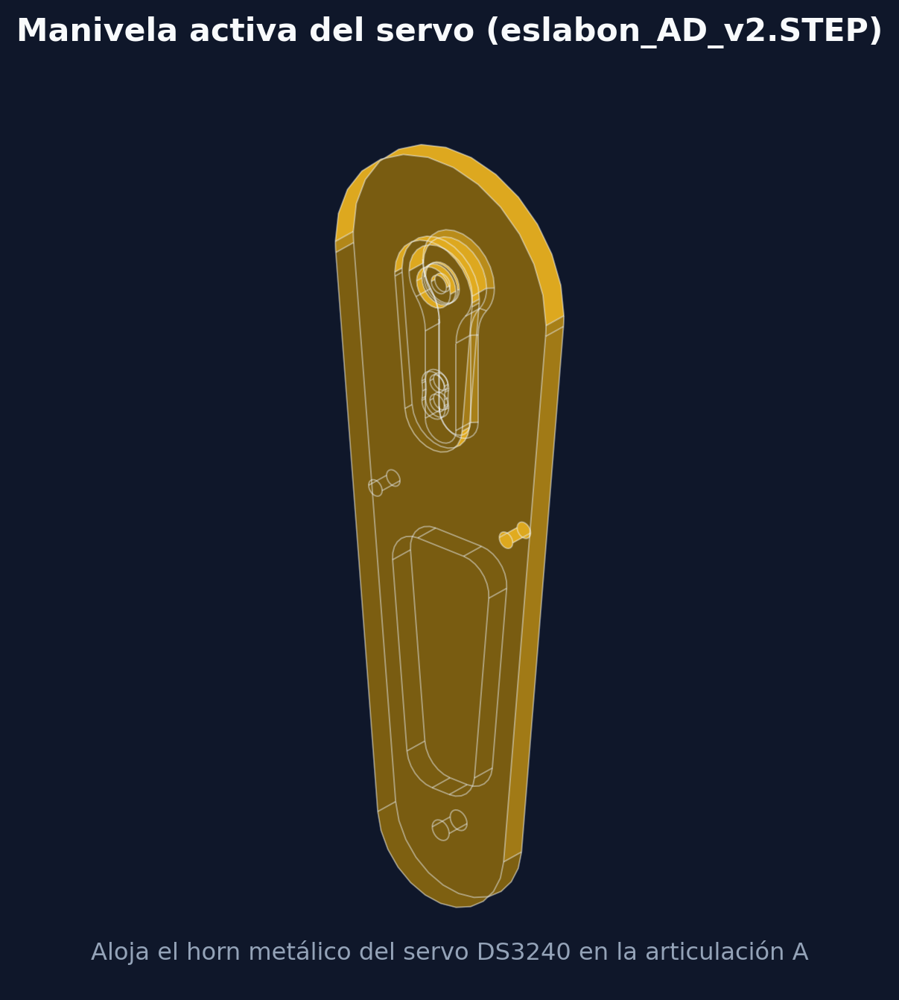
Manivela eslabon_AD_v2
112 mm (30 g). Cavidad embutida para el horn metálico del servo en A.
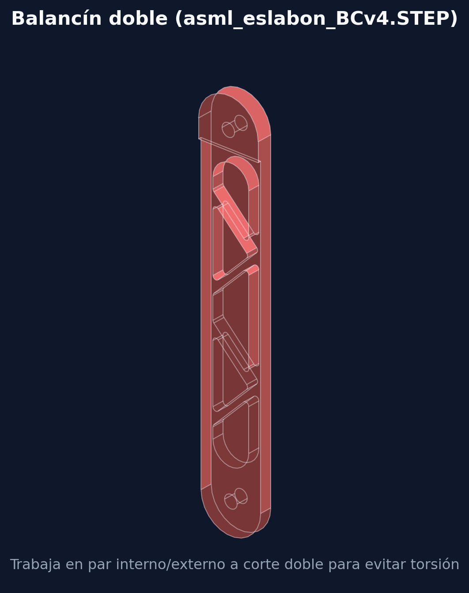
Balancín eslabon_BCv4
108 mm. Alivianado triangular y montado en par interno/externo a corte doble.
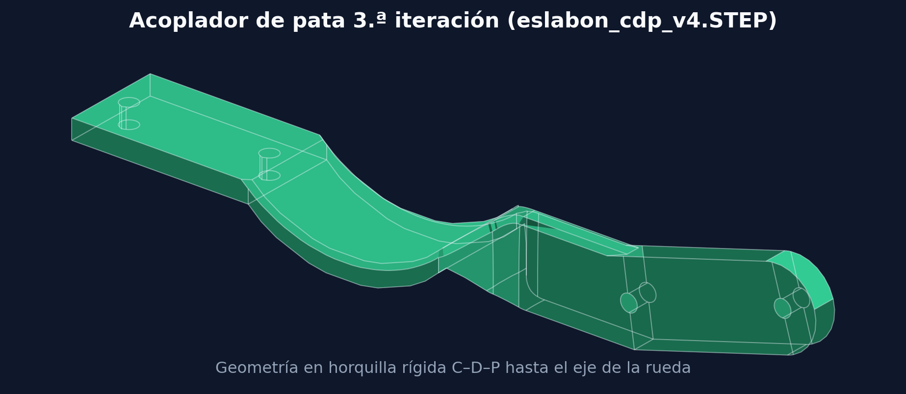
Acoplador eslabon_cdp_v4
Horquilla rígida (δ = 164°) que une rodilla C–D con el eje de rueda P.
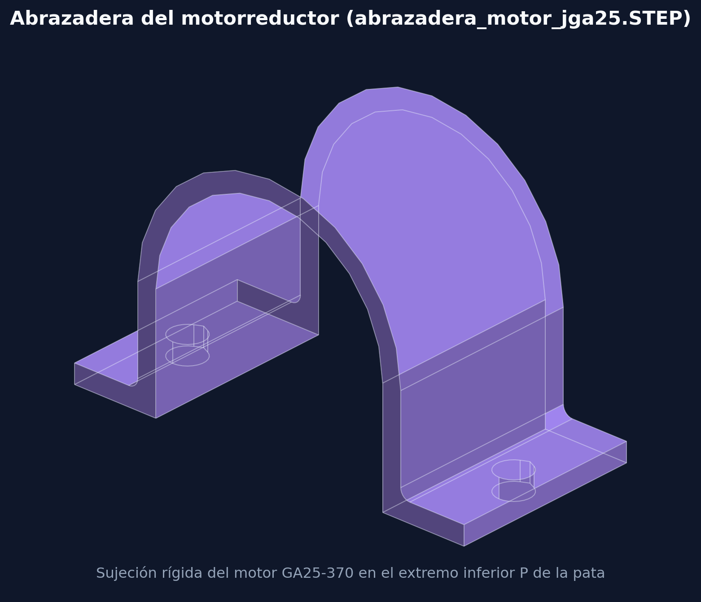
Abrazadera motor_jga25
Sujeción del motorreductor GA25-370 (96 g) en el extremo inferior de cada pata.
La elasticidad en serie del PLA (kpata ≈ 8 kN/m) reduce el impacto de caída de 421 N a ~193 N
Electrónica propia: Placa de Potencia v0.7 y Lógica v0.6
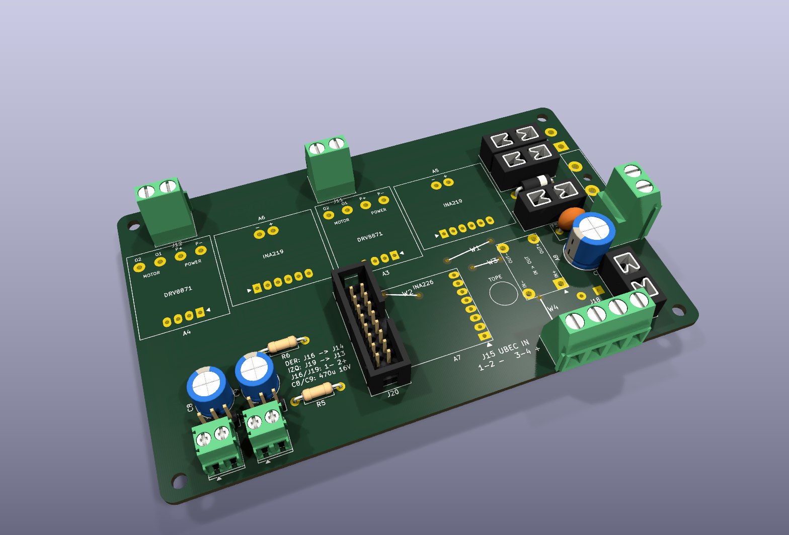
Placa de Potencia v0.7 (124 × 77 mm)
2× puentes MOSFET DRV8871 (3 % de zona muerta, +44 % de par que el L298N), 2× UBEC de 6 V independientes (uno por servo), 3× sensores INA219/INA226, diodo TVS y 5 fusibles por rama.
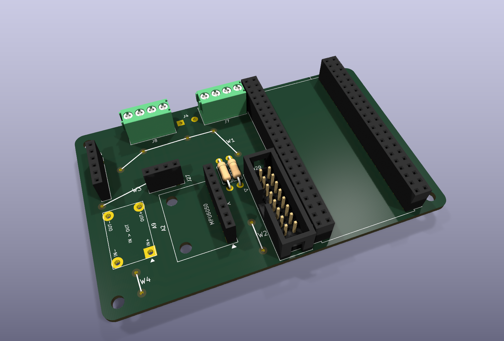
Placa de Lógica v0.6 (95 × 60 mm)
ESP32-S3 DevKitC-1 (doble núcleo a 240 MHz), IMU MPU-6050 sobre bus I²C a 400 kHz, entradas de encoders en cuadratura, sensores de distancia y zócalos codificados.
Identificación experimental y doble filtro Notch en segway_v02
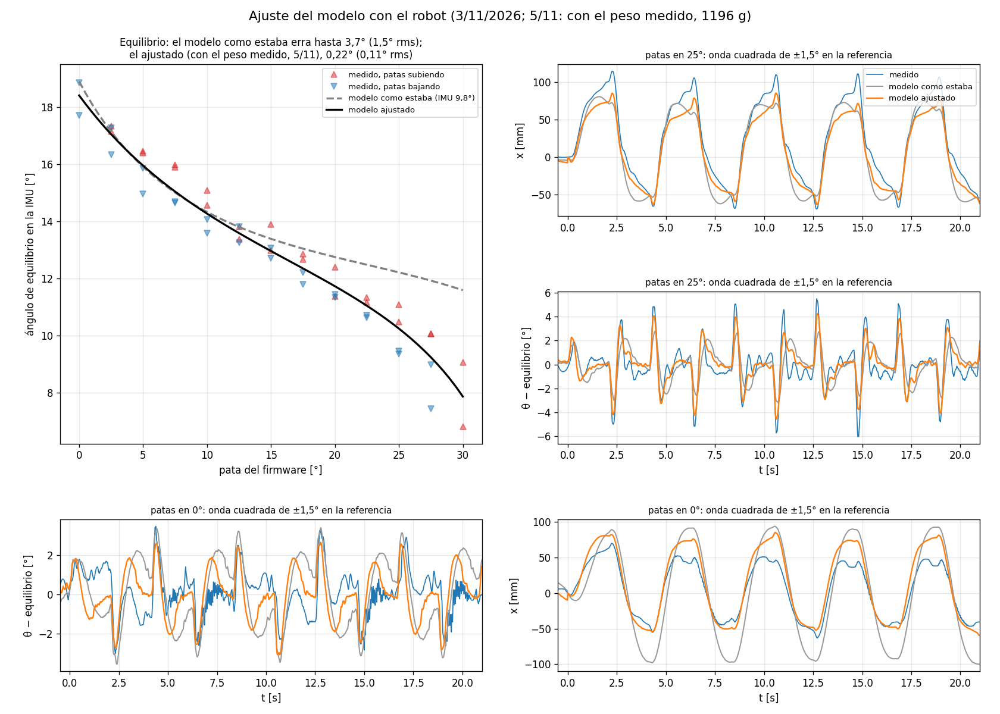
48 ensayos por WiFi en 13 alturas de pata: descubrimos que las patas reales trabajaban +10,4° más estiradas que en el CAD nominal. El error de equilibrio bajó de 1,52° a 0,08° RMS.
Salto a DRV8871 + Doble Notch (7,7 y 11,6 Hz): al eliminar los 2 V de caída del L298N, la alta sensibilidad excitó las resonancias del chasis; dos filtros biquad bajaron el temblor de 21 °/s a 1,7 °/s.
Suite automática ensayos/ (E0 a E5): mide motores con los INA219 (Rm = 7,81 Ω, Ke = 0,359) y respuesta en frecuencia sin tocar un cable.
Sensor Sharp GP2Y0A60SZLF para predecir «La Caída»
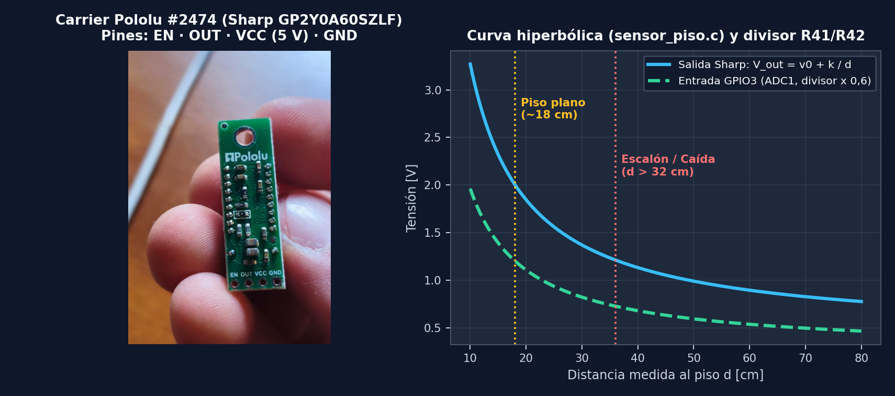
Reemplazo del ultrasonido por IR Sharp (Pololu #2474)
Haz óptico estrecho (10–150 cm a 5 V, GPIO3 ADC1 con divisor 10k/15k) que proyecta dónde pisa el suelo (sensor_piso.c) antes de caer.
Con predicción Sharp GP2Y0A60SZLF: al detectar el salto de distancia (d = k/(V − v0) ≫ dplano), el robot extiende las patas en vuelo y flexiona las rodillas al tocar (~190 N).
Firmware segway_v02 en Tiempo Real (ESP-IDF · Doble Núcleo)
Ciclo medio: 2,04 ms de 5,0 ms (0 excesos)
Bus I²C a 400 kHz + set dlpf 1 (188 Hz): lectura de la IMU en 0,89 ms (antes 2,03 ms) y −4,5 ms de retardo de fase frente a dlpf 3.
Mejoras de control en vivo: compensación de asimetría entre ruedas (set trim 0.03), filtro de velocidad ajustable (set velf 20), constante de actitud (set tau) y escala de tabla LQR (lqrfac 0.87 / lqrfacx 0.86).
Seguridad de patas (patas_para_armar): impide armar con un servo suelto y exige las dos patas igualadas (±0,5°, 0–30°) en el primer armado.
Lectura escalonada de energía: si sobra margen al final del ciclo, lee 1 registro de los 3 sensores INA219/INA226 en 0,76 ms (set inacada) sin retrasar el PWM.
39 columnas CSV + Ráfagas a 200 Hz
Telemetría por USB y WiFi UDP (:4210/:4211): transmite ángulo, odometría, referencias, corrientes (i_l_ma, i_r_ma, i_log_ma), tensión v_bat, carga soc, autonomía y tiempos de ciclo (# ciclo).
Grabación de ráfagas (grabar / botón SHARE): captura 8 s a 200 Hz (1.600 muestras completas con IMU cruda y corrientes de motor) en RAM y las descarga a Aplicacion/registros/.
Guía visual con LED RGB (led_estado.c): azul (calibrando), ámbar/cian proporcional (guía de inclinación para armar), verde (BALANCING), amarillo (motores al tope), violeta (maniobra △/□) y destellos rojos (alerta de batería).
Las 5 Pantallas de la Aplicación y Estación de Mando (Aplicacion/)
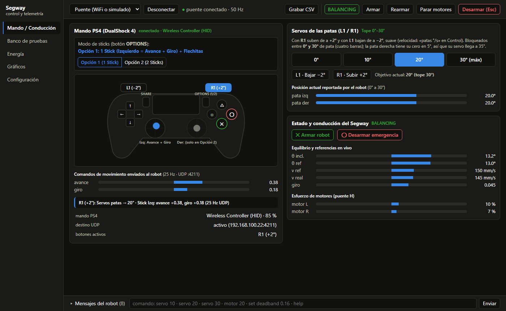
🔍 Clic en la captura para ampliar · 100 % Python estándar + HTML5 sin dependencias1. Mando / Conducción (DualShock 4 por HID nativo)
Mapa interactivo en vivo del mando PS4: leído por joystick.py directo sobre hid.dll a 25 Hz por UDP (funciona incluso con la pestaña en segundo plano). Con OPTIONS alterna entre Opción 1 (1 stick + cruceta) y Opción 2 (2 sticks separados).
Control de patas y seguridad: R1/L1 suben y bajan las patas de a ±2° (acotadas estrictamente entre 0° y 30°), ✕ arma el LQR, ◯ ejecuta corte de emergencia, △ lanza la bajada de escalón, □ la parada controlada y SHARE graba 8 s a 200 Hz.
xlibre=1) y esfuerzo de cada puente H.Acto V
Demostración en vivo
- Equilibrio autónomo en el lugar con las placas definitivas (
segway_v02) - Rechazo a perturbaciones (empujones y recuperación de posición)
- Cambio de altura de las patas en vivo adaptando las ganancias del LQR
- Conducción inalámbrica con el joystick y telemetría en pantalla
Síntesis del proyecto en números
masa total medida con LiPo y PCBs
cálculo completo del lazo (200 Hz)
precisión del modelo de equilibrio
reducción de vibración (doble Notch)
impacto en servos gracias al PLA
Potencia v0.7 + Lógica v0.6 propias
¡Muchas gracias!
¿Preguntas?
Joaquín Calderón · Francisco Castel · Matías Armani · Ignacio Bartolini · Mariano Gimenez